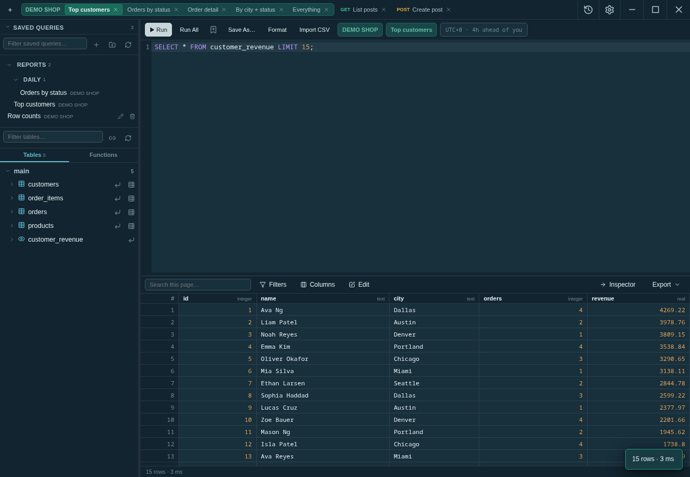
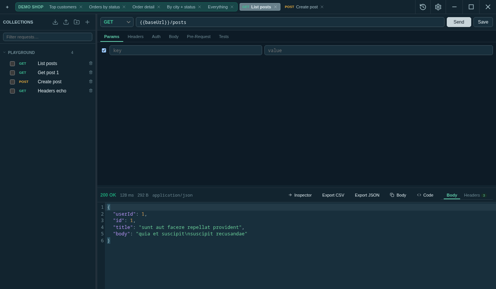
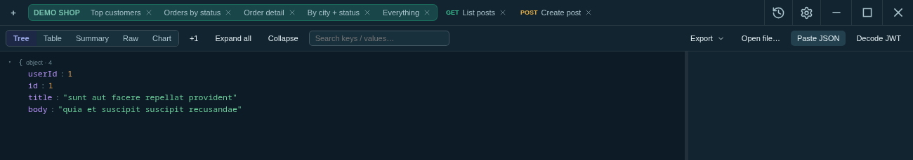
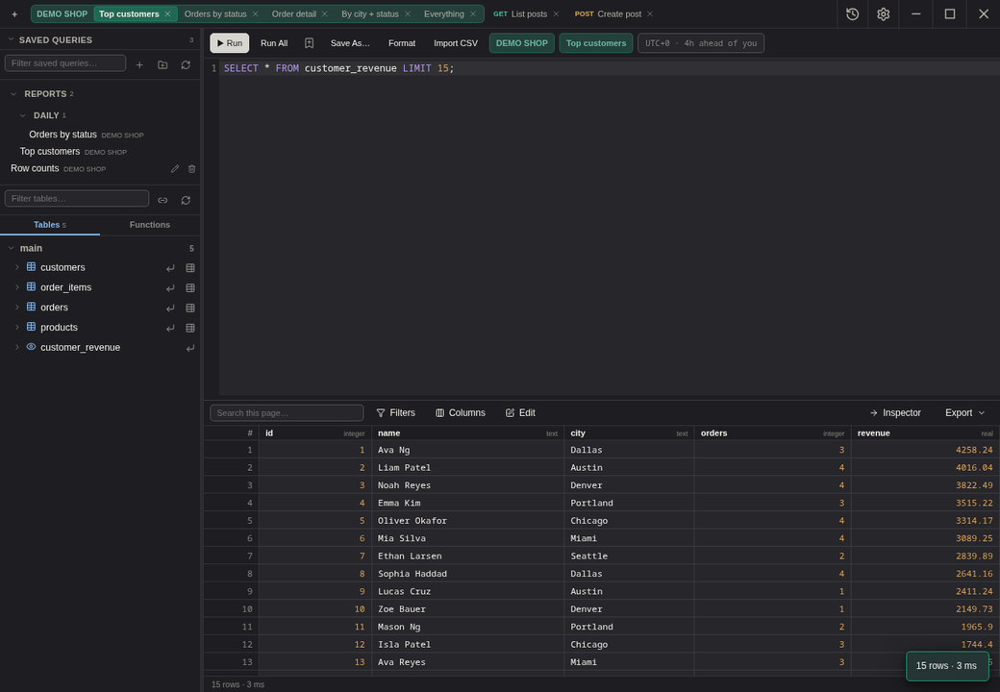
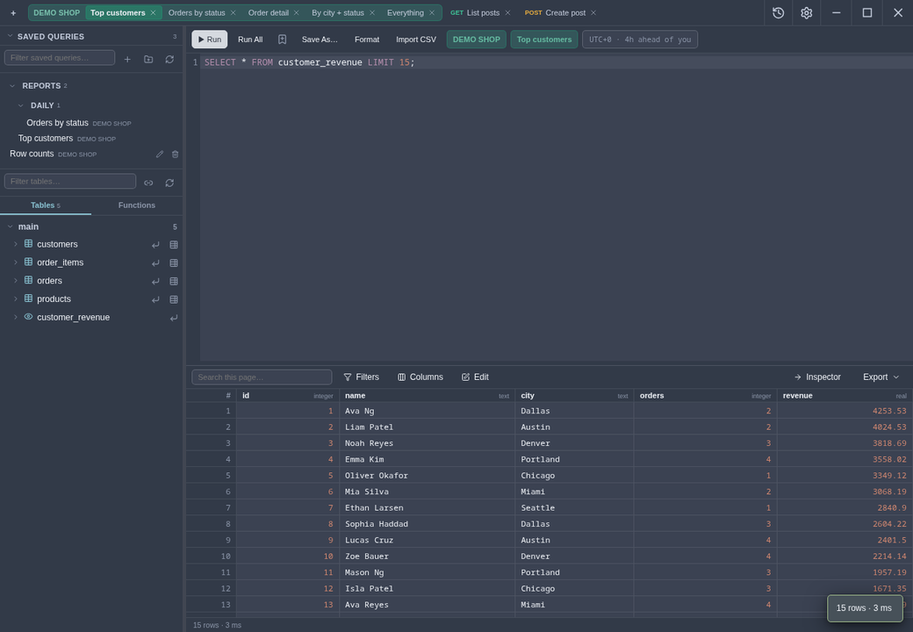
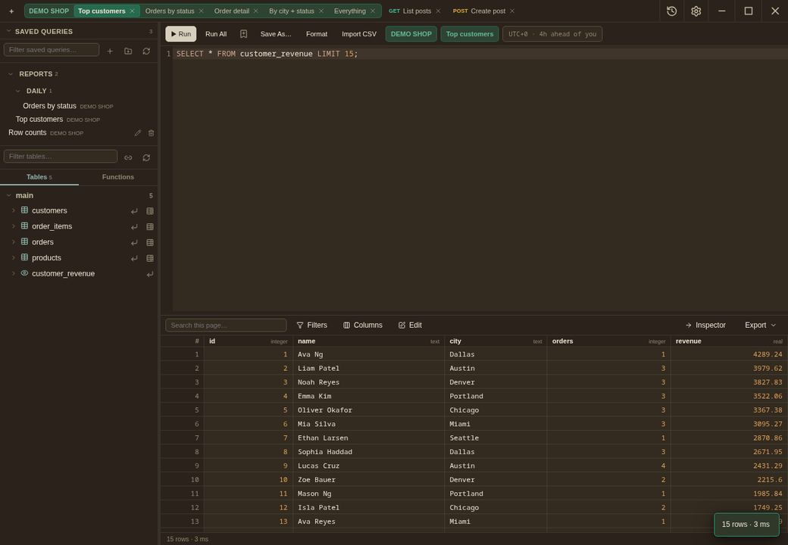
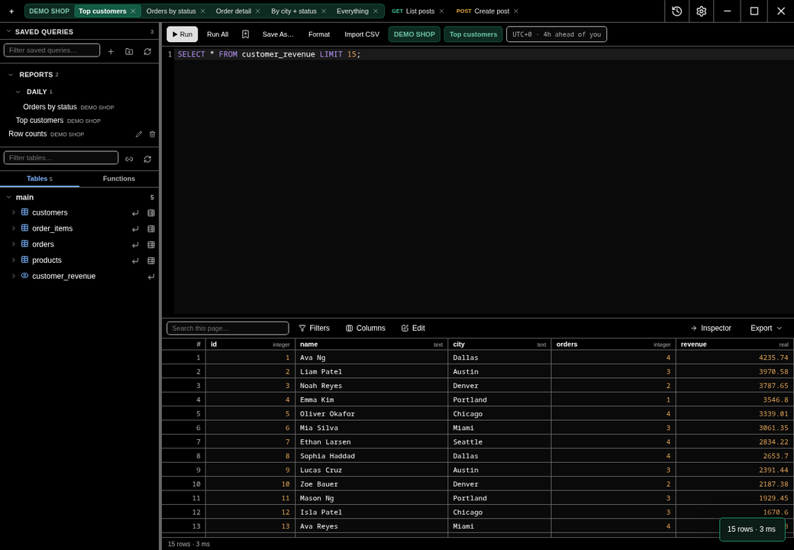
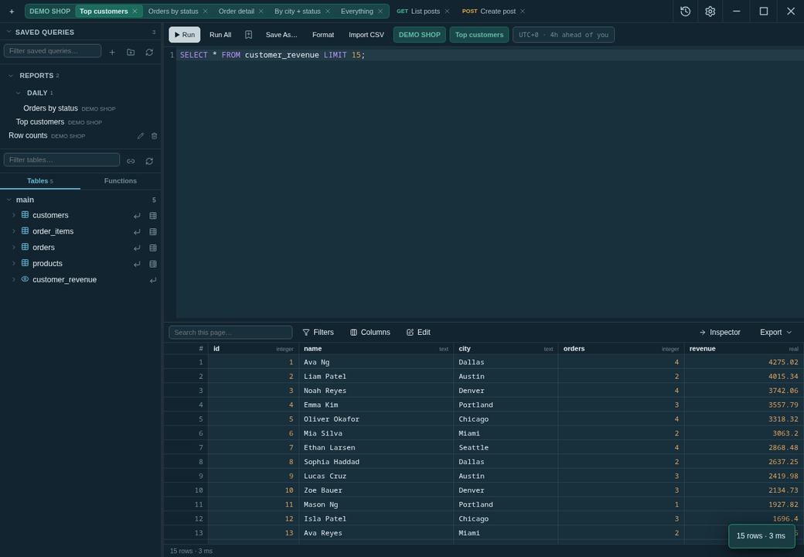

Free and open-source. Think TablePlus + Postman + a JSON viewer, unified, with a local MCP server built in so an AI assistant can run queries, send requests, and watch its own results land live in the UI.
Apache 2.0 · no paywall · no seat licenses · no account required

Postgres, MySQL, SQLite — connect with SSH tunnels or an IAM token command, browse the schema tree, and edit results as real UPDATE/INSERT/DELETE statements with a preview before anything runs.
;SELECT * and save real writes, with a diff previewCollections, environments, Postman import/export, OAuth 2.0 / Digest / AWS SigV4 auth, pre-request & test scripts, a cookie jar, a mock server, WebSocket and gRPC testing — all running locally, nothing phoned home.
.proto file needed
Every SQL result and every HTTP response can be sent straight into the same Tree / Table / Summary inspector — search with match counts, per-node editing, and a detail panel with path, type, size, and one-click copy.

Point any MCP-capable AI client at the app's local server and it can list schemas, run queries, send requests, and open tabs — behind flags you control per connection and server-wide. Nothing reachable by default.
claude mcp add og-testdesk http://127.0.0.1:7788/sse
Small, real features that add up.
Six built-in palettes, plus a custom colour editor if you want to go further.





OG TestDesk is genuinely free — Apache 2.0, no paywall, no seat licenses. If it's replaced Postman, TablePlus, pgAdmin, or a handful of troubleshooting tools in your day-to-day, here's how to help keep it moving.